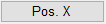
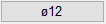
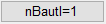
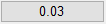
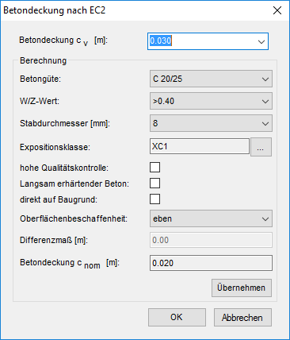
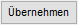

Berechnung und Angabe der Betondeckung über die Auswahl von Expositionsklasse, Betongüte und Durchmesser.
|
Tipps: |
|
·Die Standardbetondeckung können Sie in den Systemdaten einstellen. ·Bei den einzelnen Verlegungen wird in der Eingabe automatisch die aktuell eingestellte Betondeckung vorgeschlagen. Mit Rechtsklick können Sie den Wert zur Bezugslinie hinzufügen. ·Die bei der Verlegung verwendete Betondeckung kann auch über die Option nomc=... (im Funktionsbereich) in den einzelnen Verlegefunktionen (Staffel, Form- und Schnittdarstellung) geändert werden. |

Einstellung der Betondeckung im Funktionsbereich (z. B. [Formst | BiForm])
    |
0.03: Aktuell eingestellte Betondeckung. Öffnet den Dialog Betondeckung nach EC2. |
Optionen im Dialog "Betondeckung nach EC2"
 |
Parameter für die Berechnung der Betondeckung cv [m].
Betondeckung cv [m]
Wenn Sie die Betondeckung noch nicht berechnet und übernommen haben, steht hier die Standard-Betondeckung.
Um die Betondeckung zu berechnen, klicken Sie auf Übernehmen. Der ermittelte Wert wird in dieses Eingabefeld übertragen.
Berechnung
Angabe der Berechnungsparameter für die Betondeckung cv [m].
Betongüte
Wählen Sie aus der Dropdown-Liste die erforderliche Betondeckung. Beachten Sie, dass die Betongüte von den Expositionsklassen XF, XA und XM abhängt und nicht unterschritten werden kann.
W/Z-Wert
Wählen Sie aus der Dropdown-Liste den passenden Wasserzementwert aus.
Stabdurchmesser [mm]
Wählen Sie aus der Dropdown-Liste den Stabdurchmesser im Millimeter.
Expositionsklasse
Angabe der Expositionsklasse.
Öffnet den Dialog Expositionsklasse zur Auswahl einer oder mehrerer Expositionsklassen. |
hohe Qualitätskontrolle:
Wenn hohe Qualitätskontrolle erforderlich ist.
Langsam erhärtender Beton
Verwendung von langsam erhärtenden Beton.
direkt auf Baugrund
Betonüberdeckung liegt direkt auf Baugrund.
Oberflächenbeschaffenheit
Wählen Sie aus der Dropdown-Liste die Oberflächenbeschaffenheit.
Differenzmaß [m]
Ein ggf. nötiges Differenzmaß wird angezeigt.
Betondeckung cnom [m]
Anzeige der nominellen Betondeckung. Hier wird automatisch Δc berücksichtigt.

Berechnet die unter Berücksichtigung der gewählten Parameter benötigte Betondeckung. Die berechnete Betondeckung wird unter Betondeckung cv [m] eingetragen und kann mit OK übernommen werden.
Das cv wird übernommen und unter Betondeckung cv [m] angezeigt.

Die vorgenommenen Änderungen werden verworfen und die ursprünglichen Werte wiederhergestellt. Der Dialog wird geschlossen.